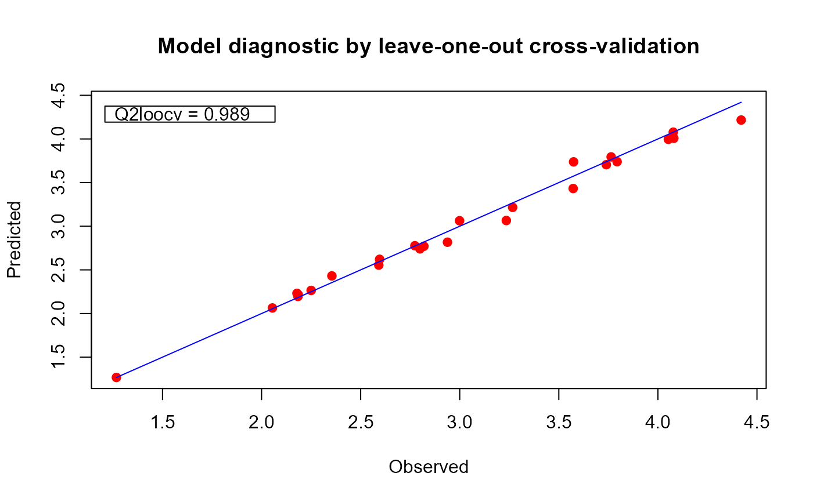
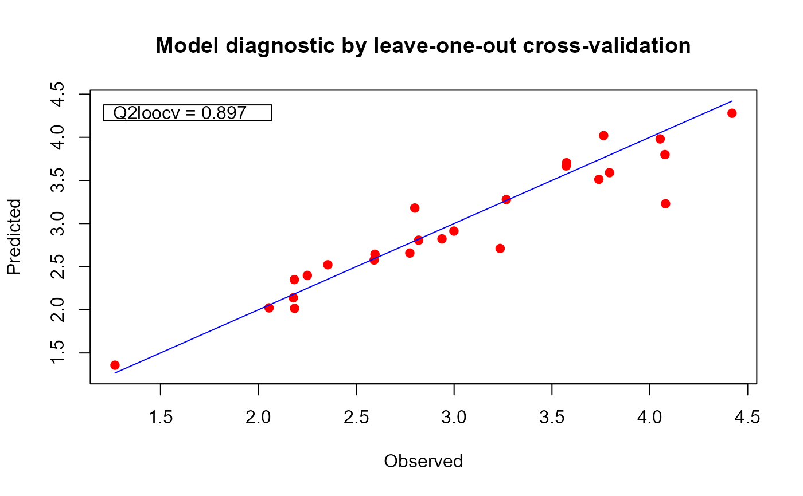

This function enables fitting of Gaussian process regression models. The inputs can be either scalar, functional or a combination of both types.
fgpm(
sIn = NULL,
fIn = NULL,
sOut,
kerType = "matern5_2",
f_disType = "L2_bygroup",
f_pdims = 3,
f_basType = "B-splines",
var.hyp = NULL,
ls_s.hyp = NULL,
ls_f.hyp = NULL,
nugget = 1e-08,
n.starts = 1,
n.presample = 20,
par.clust = NULL,
trace = TRUE,
pbars = TRUE,
control.optim = list(trace = TRUE),
...
)An optional matrix of scalar input values to train the model. Each column must match an input variable and each row a training point. Either scalar input coordinates (sIn), functional input coordinates (fIn), or both must be provided.
An optional list of functional input values to train the model. Each element of the list must be a matrix containing the set of curves corresponding to one functional input. Either scalar input coordinates (sIn), functional input coordinates (fIn), or both must be provided.
A vector (or 1-column matrix) containing the values of the scalar output at the specified input points.
An optional character string specifying the covariance structure to be used. To be chosen between "gauss", "matern5_2" and "matern3_2". Default is "matern5_2".
An optional array of character strings specifying the distance function to be used for each functional coordinates within the covariance function of the Gaussian process. To be chosen between "L2_bygroup" and "L2_byindex". The L2_bygroup distance considers each curve as a whole and uses a single length-scale parameter per functional input variable. The L2_byindex distance uses as many length-scale parameters per functional input as discretization points it has. For instance an input discretized as a vector of size 8 will use 8 length-scale parameters when using L2_byindex. If dimension reduction of a functional input is requested, then L2_byindex uses as many length scale parameters as effective dimensions used to represent the input. A single character string can also be passed as a general selection for all the functional inputs of the model. More details in the reference article (doi:10.1016/j.ress.2020.106870 ) and the in-depth package manual. Default is "L2_bygroup".
An optional array with the projection dimension for each functional input. For each input, the projection dimension should be an integer between 0 and its original dimension, with 0 denoting no projection. A single character string can also be passed as a general selection for all the functional inputs of the model. Default is 3.
An optional array of character strings specifying the family of basis functions to be used in the projection of each functional input. To be chosen between "B-splines" and "PCA". A single character string can also be passed as a general selection for all the functional inputs of the model. This argument will be ignored for those inputs for which no projection was requested (i.e., for which f_pdims = 0). Default is "B-splines".
An optional number indicating the value that should be used as the variance parameter of the model. If not provided, it is estimated through likelihood maximization.
An optional numeric array indicating the values that should be used as length-scale parameters for the scalar inputs. If provided, the size of the array should match the number of scalar inputs. If not provided, these parameters are estimated through likelihood maximization.
An optional numeric array indicating the values that should be used as length-scale parameters for the functional inputs. If provided, the size of the array should match the number of effective dimensions. Each input using the "L2_bygroup" distance will count 1 effective dimension, and each input using the "L2_byindex" distance will count as many effective dimensions as specified by the corresponding element of the f_pdims argument. For instance, two functional inputs of original dimensions 10 and 22, the first one projected onto a space of dimension 5 with "L2_byindex" distance, and the second one not projected with "L2_bygroup" distance will make up a total of 6 effective dimensions; five for the first functional input and one for second one. If this argument is not provided, the functional length-scale parameters are estimated through likelihood maximization.
An optional variance value standing for the homogeneous nugget effect. A tiny nugget might help to overcome numerical problems related to the ill-conditioning of the covariance matrix. Default is 1e-8.
An optional integer indicating the number of initial points to use for the optimization of the hyperparameters. A parallel processing cluster can be exploited in order to speed up the evaluation of multiple initial points. More details in the description of the argument par.clust below. Default is 1.
An optional integer indicating the number of points to be tested in order to select the
n.starts initial points. The n.presample points will be randomly sampled from the hyper-rectangle defined by:
1e-10 \(\le\) ls_s.hyp[i] \(\le\) 2*max(sMs[[i]]), for i in 1 to the number of scalar inputs,
1e-10 \(\le\) ls_f.hyp[i] \(\le\) 2*max(fMs[[i]]), for i in 1 to the number of functional inputs,
with sMs and fMs the lists of distance matrices for the scalar and functional inputs, respectively. The value of
n.starts will be assigned to n.presample if this last is smaller. Default is 20.
An optional parallel processing cluster created with the makeCluster function
of the parallel package. If not provided, multistart optimizations are done in sequence.
An optional boolean indicating if control messages native of the funGp package should be printed to
console. Default is TRUE. For complementary control on the display of funGp-native progress bars and
optim trace about the hyperparameter optimization process, have a look at the pbars and
control.optim arguments, respectively.
An optional boolean indicating if progress bars should be displayed. Default is TRUE.
An optional list to be passed as the control argument to optim, the function
in charge of the non-linear optimization of the hyperparameters. Default is list(trace = TRUE), equivalent to
list(trace = 1), which enables the printing of tracing information on the progress of the optimization. Before
interacting with the fgpm() control.optim argument, please carefully check the documentation about
the control argument provided in optim to ensure a coherent behavior and sound results. Note
that: (i) at this time, only the "L-BFGS-B" method (Byrd et. al., 1995) is enabled in fgpm();
(ii) control.optim$fnscale should not be used since our optimization problem is strictly of minimization, not maximization.
Extra control parameters. Currently only used internally for some update() calls.
An object of class fgpm containing the data structures representing the fitted funGp model.
Betancourt, J., Bachoc, F., Klein, T., Idier, D., Pedreros, R., and Rohmer, J. (2020), "Gaussian process metamodeling of functional-input code for coastal flood hazard assessment". Reliability Engineering & System Safety, 198, 106870. (doi:10.1016/j.ress.2020.106870 ) [HAL]
Betancourt, J., Bachoc, F., Klein, T., and Gamboa, F. (2020), Technical Report: "Ant Colony Based Model Selection for Functional-Input Gaussian Process Regression. Ref. D3.b (WP3.2)". RISCOPE project. [HAL]
Betancourt, J., Bachoc, F., and Klein, T. (2020), R Package Manual: "Gaussian Process Regression for Scalar and Functional Inputs with funGp - The in-depth tour". RISCOPE project. [HAL]
* plot,fgpm-method: validation plot for a fgpm model;
* predict,fgpm-method for predictions based on a fgpm model;
* simulate,fgpm-method for simulations based on a fgpm model;
* update,fgpm-method for post-creation updates on a fgpm model;
* fgpm_factory for funGp heuristic model selection.
# creating funGp model using default fgpm arguments________________________________________
# generating input data for training
set.seed(100)
n.tr <- 25
sIn <- expand.grid(x1 = seq(0,1,length = sqrt(n.tr)), x2 = seq(0,1,length = sqrt(n.tr)))
fIn <- list(f1 = matrix(runif(n.tr*10), ncol = 10), f2 = matrix(runif(n.tr*22), ncol = 22))
# generating output data for training
sOut <- fgp_BB3(sIn, fIn, n.tr)
# building a scalar-input funGp model
ms <- fgpm(sIn = sIn, sOut = sOut)
#> ** Presampling...
#> ** Optimising hyperparameters...
#> iter 10 value 26.756350
#> final value 26.743784
#> converged
#> The function value is the negated log-likelihood
#> ** Hyperparameters done!
# building a functional-input funGp model
mf <- fgpm(fIn = fIn, sOut = sOut)
#> ** Presampling...
#> ** Optimising hyperparameters...
#> final value 40.291940
#> converged
#> The function value is the negated log-likelihood
#> ** Hyperparameters done!
# building a hybrid-input funGp model
msf <- fgpm(sIn = sIn, fIn = fIn, sOut = sOut)
#> ** Presampling...
#> ** Optimising hyperparameters...
#> final value 2.841058
#> converged
#> The function value is the negated log-likelihood
#> ** Hyperparameters done!
# plotting the three models
plot(ms)
plot(mf)
plot(msf)

# printing the three models
summary(ms) # equivalent to show(ms)
#>
#> Gaussian Process Model__
#> * Scalar inputs: 2
#> * Functional inputs: 0
#> * Total data points: 25
#> * Trained with: 25
#> * Kernel type: matern5_2
#> * Convergence: 0
#> * NegLogLik: 26.7438
#> * Hyperparameters:
#> -> variance: 4.0588
#> -> length-scale:
#> ls(X1): 0.7555
#> ls(X2): 0.2091
#> ________________________
summary(mf) # equivalent to show(mf)
#>
#> Gaussian Process Model____________________________________
#> * Scalar inputs: 0
#> * Functional inputs: 2
#>
#> | Input | Orig. dim | Proj. dim | Basis | Distance |
#> |:-----:|:---------:|:---------:|:---------:|:----------:|
#> | F1 | 10 | 3 | B-splines | L2_bygroup |
#> | F2 | 22 | 3 | B-splines | L2_bygroup |
#>
#> * Total data points: 25
#> * Trained with: 25
#> * Kernel type: matern5_2
#> * Convergence: 0
#> * NegLogLik: 40.2919
#> * Hyperparameters:
#> -> variance: 5.0745
#> -> length-scale:
#> ls(F1): 0.4093
#> ls(F2): 3.0370
#> __________________________________________________________
summary(msf) # equivalent to show(msf)
#>
#> Gaussian Process Model____________________________________
#> * Scalar inputs: 2
#> * Functional inputs: 2
#>
#> | Input | Orig. dim | Proj. dim | Basis | Distance |
#> |:-----:|:---------:|:---------:|:---------:|:----------:|
#> | F1 | 10 | 3 | B-splines | L2_bygroup |
#> | F2 | 22 | 3 | B-splines | L2_bygroup |
#>
#> * Total data points: 25
#> * Trained with: 25
#> * Kernel type: matern5_2
#> * Convergence: 0
#> * NegLogLik: 2.8411
#> * Hyperparameters:
#> -> variance: 1.6404
#> -> length-scale:
#> ls(X1): 2.0000
#> ls(X2): 2.0000
#> ls(F1): 2.5804
#> ls(F2): 3.0370
#> __________________________________________________________
# recovering useful information from a funGp model_________________________________________
# building the model
set.seed(100)
n.tr <- 25
sIn <- expand.grid(x1 = seq(0,1,length = sqrt(n.tr)), x2 = seq(0,1,length = sqrt(n.tr)))
fIn <- list(f1 = matrix(runif(n.tr*10), ncol = 10), f2 = matrix(runif(n.tr*22), ncol = 22))
sOut <- fgp_BB3(sIn, fIn, n.tr)
m1 <- fgpm(sIn = sIn, fIn = fIn, sOut = sOut)
#> ** Presampling...
#> ** Optimising hyperparameters...
#> final value 2.841058
#> converged
#> The function value is the negated log-likelihood
#> ** Hyperparameters done!
# recovering data from model slots
m1@f_proj@coefs # list of projection coefficients for the functional inputs
#> [[1]]
#> [,1] [,2] [,3]
#> [1,] 0.3237129 0.21255838 0.5346522
#> [2,] 0.2223468 1.34947571 0.4559333
#> [3,] 0.5909821 0.55327055 0.4265835
#> [4,] 0.2446155 0.67055154 0.4551564
#> [5,] 0.3870073 0.41419577 0.3815046
#> [6,] 0.4415457 0.41894317 0.6668334
#> [7,] 0.6494271 0.91240638 0.5792249
#> [8,] 0.2678789 0.95232360 0.7711043
#> [9,] 0.8276012 0.20151182 0.4172618
#> [10,] 0.2734095 0.54643429 0.3847912
#> [11,] 0.7067003 0.56329358 0.3014265
#> [12,] 0.6468009 0.59221739 0.4309373
#> [13,] 0.6229271 -0.03915762 0.4759646
#> [14,] 0.7804757 -0.11358585 0.6696015
#> [15,] 0.5372785 0.56704494 0.6119392
#> [16,] 0.5013464 0.51404137 0.4817981
#> [17,] 0.5460831 0.11155402 0.7273778
#> [18,] 0.5480458 0.31391318 0.6452983
#> [19,] 0.4162956 0.62130199 0.7310317
#> [20,] 0.6518674 0.93601117 0.1772725
#> [21,] 0.5286249 0.29027465 0.6395710
#> [22,] 0.7234143 0.31068935 0.5257543
#> [23,] 0.6418424 0.33005655 0.3487010
#> [24,] 0.5947669 0.33128887 0.4093980
#> [25,] 0.3747970 0.80801968 0.3211958
#>
#> [[2]]
#> [,1] [,2] [,3]
#> [1,] 0.6062311 0.30341235 0.43462080
#> [2,] 0.6307970 0.31383736 0.72598551
#> [3,] 0.4873021 0.60904740 0.63901236
#> [4,] 0.4311773 0.58477244 0.36711484
#> [5,] 0.7072156 0.08218531 0.58237092
#> [6,] 0.4650037 0.86995420 0.36261238
#> [7,] 0.2116793 1.14510095 0.08505487
#> [8,] 0.2677710 0.70653857 0.35718808
#> [9,] 0.5498281 0.44441875 0.55291115
#> [10,] 0.7557775 -0.22431841 0.74606600
#> [11,] 0.3784137 0.61684573 0.44460131
#> [12,] 0.8184529 0.18063618 0.55994024
#> [13,] 0.3666109 0.99749267 0.54820428
#> [14,] 0.4563043 0.97305441 0.42286358
#> [15,] 0.4834991 0.74113335 0.64067963
#> [16,] 0.7010682 0.29187240 0.52339393
#> [17,] 0.3832942 0.32088375 0.63379726
#> [18,] 0.3934434 0.72451950 0.42451127
#> [19,] 0.6153849 0.61048910 0.27888426
#> [20,] 0.6064385 0.81107253 0.49298452
#> [21,] 0.3397964 0.95946994 0.32982844
#> [22,] 0.5816670 0.48594555 0.45196211
#> [23,] 0.6198225 0.35582662 0.48754169
#> [24,] 0.4933785 0.83987795 0.19927211
#> [25,] 0.6043914 0.09276635 0.69666106
#>
m1@f_proj@basis # list of projection basis functions for the functional inputs
#> [[1]]
#> [,1] [,2] [,3]
#> [1,] 1.00000000 0.0000000 0.00000000
#> [2,] 0.79012346 0.1975309 0.01234568
#> [3,] 0.60493827 0.3456790 0.04938272
#> [4,] 0.44444444 0.4444444 0.11111111
#> [5,] 0.30864198 0.4938272 0.19753086
#> [6,] 0.19753086 0.4938272 0.30864198
#> [7,] 0.11111111 0.4444444 0.44444444
#> [8,] 0.04938272 0.3456790 0.60493827
#> [9,] 0.01234568 0.1975309 0.79012346
#> [10,] 0.00000000 0.0000000 1.00000000
#>
#> [[2]]
#> [,1] [,2] [,3]
#> [1,] 1.000000000 0.00000000 0.000000000
#> [2,] 0.907029478 0.09070295 0.002267574
#> [3,] 0.818594104 0.17233560 0.009070295
#> [4,] 0.734693878 0.24489796 0.020408163
#> [5,] 0.655328798 0.30839002 0.036281179
#> [6,] 0.580498866 0.36281179 0.056689342
#> [7,] 0.510204082 0.40816327 0.081632653
#> [8,] 0.444444444 0.44444444 0.111111111
#> [9,] 0.383219955 0.47165533 0.145124717
#> [10,] 0.326530612 0.48979592 0.183673469
#> [11,] 0.274376417 0.49886621 0.226757370
#> [12,] 0.226757370 0.49886621 0.274376417
#> [13,] 0.183673469 0.48979592 0.326530612
#> [14,] 0.145124717 0.47165533 0.383219955
#> [15,] 0.111111111 0.44444444 0.444444444
#> [16,] 0.081632653 0.40816327 0.510204082
#> [17,] 0.056689342 0.36281179 0.580498866
#> [18,] 0.036281179 0.30839002 0.655328798
#> [19,] 0.020408163 0.24489796 0.734693878
#> [20,] 0.009070295 0.17233560 0.818594104
#> [21,] 0.002267574 0.09070295 0.907029478
#> [22,] 0.000000000 0.00000000 1.000000000
#>
Map(function(a, b) a %*% t(b), m1@f_proj@coefs, m1@f_proj@basis) # list of projected
#> [[1]]
#> [,1] [,2] [,3] [,4] [,5] [,6] [,7]
#> [1,] 0.3237129 0.3043607 0.2957059 0.2977486 0.3104888 0.3339265 0.3680617
#> [2,] 0.2223468 0.4478734 0.6235068 0.7492470 0.8250942 0.8510483 0.8271092
#> [3,] 0.5909821 0.5815033 0.5698275 0.5559549 0.5398853 0.5216188 0.5011554
#> [4,] 0.2446155 0.3313503 0.4022497 0.4573138 0.4965426 0.5199360 0.5274941
#> [5,] 0.3870073 0.3923099 0.3961341 0.3984797 0.3993468 0.3987353 0.3966454
#> [6,] 0.4415457 0.4398624 0.4448578 0.4565321 0.4748852 0.4999172 0.5316280
#> [7,] 0.6494271 0.7005069 0.7368667 0.7585065 0.7654263 0.7576261 0.7351058
#> [8,] 0.2678789 0.4092905 0.5293277 0.6279905 0.7052788 0.7611928 0.7957323
#> [9,] 0.8276012 0.6988633 0.5909116 0.5037460 0.4373666 0.3917733 0.3669662
#> [10,] 0.2734095 0.3287154 0.3732888 0.4071296 0.4302379 0.4426136 0.4442568
#> [11,] 0.7067003 0.6733697 0.6371141 0.5979336 0.5558281 0.5107977 0.4628423
#> [12,] 0.6468009 0.6333540 0.6172726 0.5985567 0.5772063 0.5532215 0.5266022
#> [13,] 0.6229271 0.4903306 0.3868009 0.3123380 0.2669420 0.2506129 0.2633505
#> [14,] 0.7804757 0.6025022 0.4659421 0.3707957 0.3170628 0.3047434 0.3338376
#> [15,] 0.5372785 0.5440801 0.5512551 0.5588037 0.5667258 0.5750214 0.5836906
#> [16,] 0.5013464 0.5036127 0.5047694 0.5048166 0.5037541 0.5015821 0.4983005
#> [17,] 0.5460831 0.4624884 0.4048284 0.3731029 0.3673121 0.3874560 0.4335345
#> [18,] 0.5480458 0.5029981 0.4719137 0.4547927 0.4516351 0.4624410 0.4872102
#> [19,] 0.4162956 0.4606763 0.5027045 0.5423802 0.5797034 0.6146741 0.6472923
#> [20,] 0.6518674 0.7021354 0.7266532 0.7254208 0.6984382 0.6457054 0.5672225
#> [21,] 0.5286249 0.4829131 0.4517111 0.4350188 0.4328364 0.4451637 0.4720008
#> [22,] 0.7234143 0.6394482 0.5709830 0.5180188 0.4805556 0.4585933 0.4521321
#> [23,] 0.6418424 0.5766360 0.5195884 0.4706996 0.4299696 0.3973983 0.3729859
#> [24,] 0.5947669 0.5404334 0.4945341 0.4570690 0.4280382 0.4074417 0.3952794
#> [25,] 0.3747970 0.4597101 0.5219060 0.5613847 0.5781462 0.5721905 0.5435176
#> [,8] [,9] [,10]
#> [1,] 0.4128944 0.4684245 0.5346522
#> [2,] 0.7532770 0.6295517 0.4559333
#> [3,] 0.4784950 0.4536377 0.4265835
#> [4,] 0.5192169 0.4951043 0.4551564
#> [5,] 0.3930770 0.3880300 0.3815046
#> [6,] 0.5700176 0.6150861 0.6668334
#> [7,] 0.6978655 0.6459053 0.5792249
#> [8,] 0.8088974 0.8006881 0.7711043
#> [9,] 0.3629452 0.3797104 0.4172618
#> [10,] 0.4351675 0.4153456 0.3847912
#> [11,] 0.4119620 0.3581567 0.3014265
#> [12,] 0.4973484 0.4654601 0.4309373
#> [13,] 0.3051550 0.3760264 0.4759646
#> [14,] 0.4043454 0.5162667 0.6696015
#> [15,] 0.5927333 0.6021495 0.6119392
#> [16,] 0.4939092 0.4884084 0.4817981
#> [17,] 0.5055476 0.6034954 0.7273778
#> [18,] 0.5259428 0.5786388 0.6452983
#> [19,] 0.6775579 0.7054711 0.7310317
#> [20,] 0.4629893 0.3330060 0.1772725
#> [21,] 0.5133478 0.5692045 0.6395710
#> [22,] 0.4611719 0.4857126 0.5257543
#> [23,] 0.3567321 0.3486372 0.3487010
#> [24,] 0.3915514 0.3962576 0.4093980
#> [25,] 0.4921276 0.4180203 0.3211958
#>
#> [[2]]
#> [,1] [,2] [,3] [,4] [,5] [,6] [,7]
#> [1,] 0.6062311 0.5783754 0.5524881 0.5285691 0.5066186 0.4866364 0.4686226
#> [2,] 0.6307970 0.6022637 0.5770370 0.5551169 0.5365034 0.5211965 0.5091962
#> [3,] 0.4873021 0.4986888 0.5096592 0.5202134 0.5303514 0.5400731 0.5493786
#> [4,] 0.4311773 0.4449636 0.4570662 0.4674851 0.4762203 0.4832718 0.4886396
#> [5,] 0.7072156 0.6502404 0.5983683 0.5515991 0.5099330 0.4733699 0.4419098
#> [6,] 0.4650037 0.5015018 0.5338624 0.5620857 0.5861715 0.6061200 0.6219312
#> [7,] 0.2116793 0.2960563 0.3713926 0.4376882 0.4949431 0.5431574 0.5823310
#> [8,] 0.2677710 0.3077712 0.3441973 0.3770491 0.4063267 0.4320300 0.4541591
#> [9,] 0.5498281 0.5402742 0.5316903 0.5240765 0.5174328 0.5117591 0.5070556
#> [10,] 0.7557775 0.6668579 0.5867840 0.5155558 0.4531734 0.3996366 0.3549456
#> [11,] 0.3784137 0.4001903 0.4201044 0.4381560 0.4543451 0.4686718 0.4811360
#> [12,] 0.8184529 0.7600149 0.7061896 0.6569772 0.6123775 0.5723906 0.5370165
#> [13,] 0.3666109 0.4242456 0.4769814 0.5248186 0.5677570 0.6057967 0.6389376
#> [14,] 0.4563043 0.5030992 0.5450554 0.5821729 0.6144516 0.6418916 0.6644928
#> [15,] 0.4834991 0.5072237 0.5293243 0.5498009 0.5686536 0.5858823 0.6014870
#> [16,] 0.7010682 0.6635501 0.6289376 0.5972310 0.5684301 0.5425349 0.5195455
#> [17,] 0.3832942 0.3782014 0.3748108 0.3731223 0.3731360 0.3748518 0.3782698
#> [18,] 0.3934434 0.4235435 0.4507814 0.4751573 0.4966712 0.5153230 0.5311127
#> [19,] 0.6153849 0.6141778 0.6114890 0.6073186 0.6016664 0.5945326 0.5859172
#> [20,] 0.6064385 0.6247422 0.6406752 0.6542376 0.6654294 0.6742505 0.6807011
#> [21,] 0.3397964 0.3959800 0.4464978 0.4913498 0.5305359 0.5640562 0.5919107
#> [22,] 0.5816670 0.5726906 0.5639943 0.5555779 0.5474416 0.5395852 0.5320088
#> [23,] 0.6198225 0.5955773 0.5731267 0.5524708 0.5336095 0.5165427 0.5012706
#> [24,] 0.4933785 0.5241401 0.5504250 0.5722333 0.5895649 0.6024199 0.6107981
#> [25,] 0.6043914 0.5581947 0.5170571 0.4809785 0.4499590 0.4239985 0.4030971
#> [,8] [,9] [,10] [,11] [,12] [,13] [,14]
#> [1,] 0.4525772 0.4385001 0.4263914 0.4162511 0.4080792 0.4018757 0.3976405
#> [2,] 0.5005026 0.4951155 0.4930351 0.4942612 0.4987940 0.5066334 0.5177794
#> [3,] 0.5582678 0.5667408 0.5747976 0.5824381 0.5896624 0.5964705 0.6028623
#> [4,] 0.4923238 0.4943242 0.4946410 0.4932741 0.4902235 0.4854892 0.4790713
#> [5,] 0.4155527 0.3942987 0.3781477 0.3670997 0.3611547 0.3603127 0.3645738
#> [6,] 0.6336049 0.6411413 0.6445402 0.6438018 0.6389261 0.6299129 0.6167624
#> [7,] 0.6124640 0.6335563 0.6456079 0.6486188 0.6425891 0.6275187 0.6034076
#> [8,] 0.4727140 0.4876947 0.4991011 0.5069333 0.5111912 0.5118750 0.5089845
#> [9,] 0.5033221 0.5005587 0.4987653 0.4979420 0.4980889 0.4992057 0.5012927
#> [10,] 0.3191003 0.2921007 0.2739468 0.2646386 0.2641762 0.2725594 0.2897884
#> [11,] 0.4917377 0.5004769 0.5073537 0.5123679 0.5155197 0.5168090 0.5162359
#> [12,] 0.5062552 0.4801067 0.4585710 0.4416480 0.4293379 0.4216406 0.4185560
#> [13,] 0.6671799 0.6905234 0.7089681 0.7225142 0.7311615 0.7349100 0.7337599
#> [14,] 0.6822554 0.6951792 0.7032642 0.7065105 0.7049181 0.6984870 0.6872171
#> [15,] 0.6154677 0.6278244 0.6385572 0.6476660 0.6551507 0.6610116 0.6652484
#> [16,] 0.4994618 0.4822839 0.4680117 0.4566453 0.4481846 0.4426297 0.4399805
#> [17,] 0.3833899 0.3902122 0.3987366 0.4089632 0.4208919 0.4345227 0.4498558
#> [18,] 0.5440403 0.5541059 0.5613095 0.5656510 0.5671304 0.5657477 0.5615030
#> [19,] 0.5758200 0.5642412 0.5511807 0.5366386 0.5206147 0.5031092 0.4841220
#> [20,] 0.6847810 0.6864903 0.6858289 0.6827970 0.6773944 0.6696212 0.6594774
#> [21,] 0.6140993 0.6306221 0.6414791 0.6466703 0.6461956 0.6400551 0.6282488
#> [22,] 0.5247125 0.5176961 0.5109597 0.5045033 0.4983268 0.4924304 0.4868140
#> [23,] 0.4877931 0.4761102 0.4662219 0.4581282 0.4518291 0.4473246 0.4446148
#> [24,] 0.6146997 0.6141247 0.6090730 0.5995446 0.5855395 0.5670578 0.5440994
#> [25,] 0.3872547 0.3764713 0.3707470 0.3700818 0.3744756 0.3839284 0.3984403
#> [,15] [,16] [,17] [,18] [,19] [,20] [,21]
#> [1,] 0.3953737 0.3950753 0.3967453 0.4003836 0.4059904 0.4135655 0.4231089
#> [2,] 0.5322321 0.5499913 0.5710571 0.5954296 0.6231087 0.6540943 0.6883866
#> [3,] 0.6088379 0.6143973 0.6195404 0.6242672 0.6285779 0.6324723 0.6359504
#> [4,] 0.4709696 0.4611843 0.4497152 0.4365625 0.4217261 0.4052061 0.3870023
#> [5,] 0.3739378 0.3884049 0.4079751 0.4326482 0.4624243 0.4973035 0.5372857
#> [6,] 0.5994745 0.5780492 0.5524865 0.5227864 0.4889490 0.4509742 0.4088620
#> [7,] 0.5702558 0.5280634 0.4768303 0.4165566 0.3472422 0.2688871 0.1814913
#> [8,] 0.5025197 0.4924808 0.4788676 0.4616801 0.4409185 0.4165826 0.3886724
#> [9,] 0.5043497 0.5083769 0.5133741 0.5193413 0.5262787 0.5341861 0.5430636
#> [10,] 0.3158631 0.3507835 0.3945496 0.4471615 0.5086190 0.5789223 0.6580713
#> [11,] 0.5138002 0.5095021 0.5033415 0.4953184 0.4854328 0.4736848 0.4600743
#> [12,] 0.4200843 0.4262253 0.4369792 0.4523458 0.4723252 0.4969174 0.5261224
#> [13,] 0.7277110 0.7167634 0.7009170 0.6801719 0.6545281 0.6239856 0.5885443
#> [14,] 0.6711085 0.6501611 0.6243750 0.5937502 0.5582867 0.5179844 0.4728433
#> [15,] 0.6678612 0.6688501 0.6682150 0.6659559 0.6620728 0.6565657 0.6494347
#> [16,] 0.4402371 0.4433994 0.4494674 0.4584412 0.4703208 0.4851061 0.5027971
#> [17,] 0.4668909 0.4856282 0.5060677 0.5282093 0.5520531 0.5775990 0.6048471
#> [18,] 0.5543963 0.5444275 0.5315966 0.5159036 0.4973486 0.4759316 0.4516525
#> [19,] 0.4636532 0.4417026 0.4182704 0.3933565 0.3669610 0.3390837 0.3097248
#> [20,] 0.6469630 0.6320779 0.6148222 0.5951959 0.5731990 0.5488315 0.5220933
#> [21,] 0.6107767 0.5876387 0.5588349 0.5243652 0.4842298 0.4384285 0.3869614
#> [22,] 0.4814775 0.4764211 0.4716446 0.4671481 0.4629316 0.4589951 0.4553386
#> [23,] 0.4436995 0.4445789 0.4472528 0.4517214 0.4579845 0.4660423 0.4758947
#> [24,] 0.5166643 0.4847526 0.4483642 0.4074991 0.3621573 0.3123389 0.2580439
#> [25,] 0.4180112 0.4426412 0.4723302 0.5070783 0.5468854 0.5917516 0.6416768
#> [,22]
#> [1,] 0.43462080
#> [2,] 0.72598551
#> [3,] 0.63901236
#> [4,] 0.36711484
#> [5,] 0.58237092
#> [6,] 0.36261238
#> [7,] 0.08505487
#> [8,] 0.35718808
#> [9,] 0.55291115
#> [10,] 0.74606600
#> [11,] 0.44460131
#> [12,] 0.55994024
#> [13,] 0.54820428
#> [14,] 0.42286358
#> [15,] 0.64067963
#> [16,] 0.52339393
#> [17,] 0.63379726
#> [18,] 0.42451127
#> [19,] 0.27888426
#> [20,] 0.49298452
#> [21,] 0.32982844
#> [22,] 0.45196211
#> [23,] 0.48754169
#> [24,] 0.19927211
#> [25,] 0.69666106
#>
# functional inputs
tcrossprod(m1@preMats$L) # training auto-covariance matrix
#> [,1] [,2] [,3] [,4] [,5] [,6] [,7] [,8]
#> [1,] 1.6404312 1.353128 1.408579 1.426799 1.337221 1.504611 1.277256 1.324538
#> [2,] 1.3531276 1.640431 1.493215 1.405305 1.275562 1.431691 1.389219 1.473720
#> [3,] 1.4085786 1.493215 1.640431 1.517888 1.440802 1.477615 1.409830 1.431642
#> [4,] 1.4267986 1.405305 1.517888 1.640431 1.552524 1.397232 1.362230 1.493991
#> [5,] 1.3372209 1.275562 1.440802 1.552524 1.640431 1.221276 1.148343 1.301065
#> [6,] 1.5046113 1.431691 1.477615 1.397232 1.221276 1.640431 1.475849 1.441653
#> [7,] 1.2772563 1.389219 1.409830 1.362230 1.148343 1.475849 1.640431 1.504811
#> [8,] 1.3245375 1.473720 1.431642 1.493991 1.301065 1.441653 1.504811 1.640431
#> [9,] 1.3340750 1.317342 1.552564 1.489639 1.505073 1.364151 1.338750 1.356668
#> [10,] 1.2839967 1.254791 1.363113 1.484974 1.594336 1.168538 1.085179 1.288684
#> [11,] 1.4134142 1.351688 1.439762 1.316637 1.197134 1.507062 1.454748 1.356971
#> [12,] 1.4142625 1.420078 1.462590 1.368550 1.332386 1.474275 1.389749 1.368481
#> [13,] 1.3031886 1.212329 1.469310 1.358100 1.286829 1.431855 1.269642 1.269313
#> [14,] 1.2383815 1.194134 1.459248 1.389662 1.341036 1.392554 1.311023 1.311672
#> [15,] 1.1292851 1.302382 1.461720 1.415293 1.376802 1.301206 1.288928 1.389307
#> [16,] 1.4153246 1.329613 1.345673 1.272679 1.192758 1.490919 1.333129 1.321976
#> [17,] 1.3776469 1.267095 1.358217 1.323436 1.242380 1.431508 1.295576 1.389289
#> [18,] 1.3206882 1.293891 1.428691 1.409326 1.303663 1.465748 1.404893 1.450479
#> [19,] 1.2158968 1.271803 1.329034 1.404245 1.319626 1.356409 1.366254 1.455045
#> [20,] 0.9988652 1.176824 1.337056 1.267145 1.254139 1.178846 1.234981 1.213783
#> [21,] 1.2596179 1.162631 1.241131 1.169223 1.018902 1.459400 1.330685 1.279480
#> [22,] 1.2606114 1.202205 1.302843 1.225537 1.158141 1.392095 1.318668 1.283076
#> [23,] 1.2382875 1.157319 1.302221 1.274866 1.262531 1.303545 1.231043 1.243909
#> [24,] 1.1443856 1.075254 1.259220 1.296337 1.246537 1.267583 1.257796 1.249411
#> [25,] 1.0574377 1.137962 1.229070 1.283294 1.323806 1.105924 1.095492 1.242143
#> [,9] [,10] [,11] [,12] [,13] [,14] [,15] [,16]
#> [1,] 1.334075 1.283997 1.413414 1.414262 1.303189 1.238381 1.129285 1.415325
#> [2,] 1.317342 1.254791 1.351688 1.420078 1.212329 1.194134 1.302382 1.329613
#> [3,] 1.552564 1.363113 1.439762 1.462590 1.469310 1.459248 1.461720 1.345673
#> [4,] 1.489639 1.484974 1.316637 1.368550 1.358100 1.389662 1.415293 1.272679
#> [5,] 1.505073 1.594336 1.197134 1.332386 1.286829 1.341036 1.376802 1.192758
#> [6,] 1.364151 1.168538 1.507062 1.474275 1.431855 1.392554 1.301206 1.490919
#> [7,] 1.338750 1.085179 1.454748 1.389749 1.269642 1.311023 1.288928 1.333129
#> [8,] 1.356668 1.288684 1.356971 1.368481 1.269313 1.311672 1.389307 1.321976
#> [9,] 1.640431 1.448521 1.424030 1.481892 1.477430 1.530941 1.489119 1.349729
#> [10,] 1.448521 1.640431 1.182072 1.336698 1.244488 1.285491 1.367842 1.225398
#> [11,] 1.424030 1.182072 1.640431 1.532287 1.407465 1.349524 1.264224 1.545914
#> [12,] 1.481892 1.336698 1.532287 1.640431 1.377762 1.389749 1.356222 1.578841
#> [13,] 1.477430 1.244488 1.407465 1.377762 1.640431 1.580239 1.450506 1.365046
#> [14,] 1.530941 1.285491 1.349524 1.389749 1.580239 1.640431 1.531764 1.326714
#> [15,] 1.489119 1.367842 1.264224 1.356222 1.450506 1.531764 1.640431 1.260366
#> [16,] 1.349729 1.225398 1.545914 1.578841 1.365046 1.326714 1.260366 1.640431
#> [17,] 1.390914 1.296584 1.486160 1.463380 1.424465 1.389984 1.332307 1.528379
#> [18,] 1.475670 1.316968 1.481134 1.492355 1.511995 1.532986 1.487424 1.507368
#> [19,] 1.402312 1.337723 1.315601 1.447024 1.336316 1.445683 1.479857 1.411409
#> [20,] 1.426565 1.246247 1.258295 1.350287 1.361522 1.443288 1.522149 1.244691
#> [21,] 1.237753 1.034840 1.476401 1.397187 1.404506 1.356310 1.242020 1.529027
#> [22,] 1.382343 1.190010 1.505391 1.526358 1.400678 1.405954 1.321870 1.575300
#> [23,] 1.432929 1.306267 1.444638 1.497900 1.416887 1.423449 1.355282 1.515421
#> [24,] 1.403982 1.252758 1.339291 1.386425 1.416308 1.479417 1.402836 1.388656
#> [25,] 1.364156 1.428247 1.225135 1.338257 1.259366 1.310255 1.427827 1.306598
#> [,17] [,18] [,19] [,20] [,21] [,22] [,23] [,24]
#> [1,] 1.377647 1.320688 1.215897 0.9988652 1.259618 1.260611 1.238288 1.144386
#> [2,] 1.267095 1.293891 1.271803 1.1768238 1.162631 1.202205 1.157319 1.075254
#> [3,] 1.358217 1.428691 1.329034 1.3370558 1.241131 1.302843 1.302221 1.259220
#> [4,] 1.323436 1.409326 1.404245 1.2671455 1.169223 1.225537 1.274866 1.296337
#> [5,] 1.242380 1.303663 1.319626 1.2541389 1.018902 1.158141 1.262531 1.246537
#> [6,] 1.431508 1.465748 1.356409 1.1788462 1.459400 1.392095 1.303545 1.267583
#> [7,] 1.295576 1.404893 1.366254 1.2349815 1.330685 1.318668 1.231043 1.257796
#> [8,] 1.389289 1.450479 1.455045 1.2137829 1.279480 1.283076 1.243909 1.249411
#> [9,] 1.390914 1.475670 1.402312 1.4265653 1.237753 1.382343 1.432929 1.403982
#> [10,] 1.296584 1.316968 1.337723 1.2462475 1.034840 1.190010 1.306267 1.252758
#> [11,] 1.486160 1.481134 1.315601 1.2582954 1.476401 1.505391 1.444638 1.339291
#> [12,] 1.463380 1.492355 1.447024 1.3502869 1.397187 1.526358 1.497900 1.386425
#> [13,] 1.424465 1.511995 1.336316 1.3615224 1.404506 1.400678 1.416887 1.416308
#> [14,] 1.389984 1.532986 1.445683 1.4432878 1.356310 1.405954 1.423449 1.479417
#> [15,] 1.332307 1.487424 1.479857 1.5221489 1.242020 1.321870 1.355282 1.402836
#> [16,] 1.528379 1.507368 1.411409 1.2446906 1.529027 1.575300 1.515421 1.388656
#> [17,] 1.640431 1.566621 1.411995 1.2063658 1.502863 1.530833 1.499653 1.389719
#> [18,] 1.566621 1.640431 1.551825 1.4088072 1.529600 1.563333 1.549505 1.542463
#> [19,] 1.411995 1.551825 1.640431 1.4250179 1.377721 1.463112 1.468441 1.523597
#> [20,] 1.206366 1.408807 1.425018 1.6404312 1.212606 1.348407 1.407139 1.465897
#> [21,] 1.502863 1.529600 1.377721 1.2126060 1.640431 1.556620 1.461930 1.424798
#> [22,] 1.530833 1.563333 1.463112 1.3484067 1.556620 1.640431 1.598463 1.517011
#> [23,] 1.499653 1.549505 1.468441 1.4071394 1.461930 1.598463 1.640431 1.569898
#> [24,] 1.389719 1.542463 1.523597 1.4658974 1.424798 1.517011 1.569898 1.640431
#> [25,] 1.370233 1.439172 1.452190 1.4373175 1.224460 1.392564 1.497675 1.462687
#> [,25]
#> [1,] 1.057438
#> [2,] 1.137962
#> [3,] 1.229070
#> [4,] 1.283294
#> [5,] 1.323806
#> [6,] 1.105924
#> [7,] 1.095492
#> [8,] 1.242143
#> [9,] 1.364156
#> [10,] 1.428247
#> [11,] 1.225135
#> [12,] 1.338257
#> [13,] 1.259366
#> [14,] 1.310255
#> [15,] 1.427827
#> [16,] 1.306598
#> [17,] 1.370233
#> [18,] 1.439172
#> [19,] 1.452190
#> [20,] 1.437318
#> [21,] 1.224460
#> [22,] 1.392564
#> [23,] 1.497675
#> [24,] 1.462687
#> [25,] 1.640431
# making predictions based on a funGp model________________________________________________
# building the model
set.seed(100)
n.tr <- 25
sIn <- expand.grid(x1 = seq(0,1,length = sqrt(n.tr)), x2 = seq(0,1,length = sqrt(n.tr)))
fIn <- list(f1 = matrix(runif(n.tr*10), ncol = 10), f2 = matrix(runif(n.tr*22), ncol = 22))
sOut <- fgp_BB3(sIn, fIn, n.tr)
m1 <- fgpm(sIn = sIn, fIn = fIn, sOut = sOut)
#> ** Presampling...
#> ** Optimising hyperparameters...
#> final value 2.841058
#> converged
#> The function value is the negated log-likelihood
#> ** Hyperparameters done!
# generating input data for prediction
n.pr <- 100
sIn.pr <- as.matrix(expand.grid(x1 = seq(0,1,length = sqrt(n.pr)),
x2 = seq(0,1,length = sqrt(n.pr))))
fIn.pr <- list(f1 = matrix(runif(n.pr*10), ncol = 10), matrix(runif(n.pr*22), ncol = 22))
# making predictions
m1.preds <- predict(m1, sIn.pr = sIn.pr, fIn.pr = fIn.pr)
# plotting predictions
plot(m1.preds)
# simulating from a funGp model____________________________________________________________
# building the model
set.seed(100)
n.tr <- 25
sIn <- expand.grid(x1 = seq(0,1,length = sqrt(n.tr)), x2 = seq(0,1,length = sqrt(n.tr)))
fIn <- list(f1 = matrix(runif(n.tr*10), ncol = 10), f2 = matrix(runif(n.tr*22), ncol = 22))
sOut <- fgp_BB3(sIn, fIn, n.tr)
m1 <- fgpm(sIn = sIn, fIn = fIn, sOut = sOut)
#> ** Presampling...
#> ** Optimising hyperparameters...
#> final value 2.841058
#> converged
#> The function value is the negated log-likelihood
#> ** Hyperparameters done!
# generating input data for simulation
n.sm <- 100
sIn.sm <- as.matrix(expand.grid(x1 = seq(0,1,length = sqrt(n.sm)),
x2 = seq(0,1,length = sqrt(n.sm))))
fIn.sm <- list(f1 = matrix(runif(n.sm*10), ncol = 10), matrix(runif(n.sm*22), ncol = 22))
# making simulations
m1.sims <- simulate(m1, nsim = 10, sIn.sm = sIn.sm, fIn.sm = fIn.sm)
# plotting simulations
plot(m1.sims)
# creating funGp model using custom fgpm arguments_________________________________________
# generating input and output data
set.seed(100)
n.tr <- 25
sIn <- expand.grid(x1 = seq(0,1,length = sqrt(n.tr)), x2 = seq(0,1,length = sqrt(n.tr)))
fIn <- list(f1 = matrix(runif(n.tr*10), ncol = 10), f2 = matrix(runif(n.tr*22), ncol = 22))
sOut <- fgp_BB3(sIn, fIn, n.tr)
# original dimensions
# f1: 10
# f2: 22
# building a the model with the following structure
# - Kernel: Gaussian
# - f1: L2_byindex distance, no projection -> 10 length-scale parameters
# - f2: L2_bygroup distance, B-spline basis of dimension 5 -> 1 length-scale parameter
m1 <- fgpm(sIn = sIn, fIn = fIn, sOut = sOut,
kerType = "gauss", f_disType = c("L2_byindex", "L2_bygroup"),
f_pdims = c(0,5), f_basType = c(NA, "B-splines"))
#> ** Presampling...
#> ** Optimising hyperparameters...
#> final value 18.777358
#> converged
#> The function value is the negated log-likelihood
#> ** Hyperparameters done!
# plotting the model
plot(m1)

# printing the model
m1 # equivalent to show(m1)
#>
#> Gaussian Process Model____________________________________
#> * Scalar inputs: 2
#> * Functional inputs: 2
#>
#> | Input | Orig. dim | Proj. dim | Basis | Distance |
#> |:-----:|:---------:|:---------:|:---------:|:----------:|
#> | F1 | 10 | 0 | NA | L2_byindex |
#> | F2 | 22 | 5 | B-splines | L2_bygroup |
#>
#> * Total data points: 25
#> * Trained with: 25
#> * Kernel type: gauss
#> * Convergence: 0
#> * NegLogLik: 18.7774
#> * Hyperparameters:
#> -> variance: 1.2483
#> -> length-scale:
#> ls(X1): 1.6536
#> ls(X2): 1.1010
#> ls(F1): 1.6516
#> ls(F1): 1.7186
#> ls(F1): 1.6870
#> ls(F1): 1.9054
#> ls(F1): 1.9191
#> ls(F1): 1.9578
#>
#> Some length-scale parameters were not printed. Consider
#> checking 'model@kern@s_lsHyps' and 'model@kern@f_lsHyps'
#> __________________________________________________________
if (FALSE) {
# multistart and parallelization in fgpm___________________________________________________
# generating input and output data
set.seed(100)
n.tr <- 243
sIn <- expand.grid(x1 = seq(0,1,length = n.tr^(1/5)), x2 = seq(0,1,length = n.tr^(1/5)),
x3 = seq(0,1,length = n.tr^(1/5)), x4 = seq(0,1,length = n.tr^(1/5)),
x5 = seq(0,1,length = n.tr^(1/5)))
fIn <- list(f1 = matrix(runif(n.tr*10), ncol = 10), f2 = matrix(runif(n.tr*22), ncol = 22))
sOut <- fgp_BB7(sIn, fIn, n.tr)
# calling fgpm with multistart in parallel
cl <- parallel::makeCluster(2)
m1 <- fgpm(sIn = sIn, fIn = fIn, sOut = sOut, n.starts = 10, par.clust = cl) # (~14 seconds)
parallel::stopCluster(cl)
# NOTE: in order to provide progress bars for the monitoring of time consuming processes
# ran in parallel, funGp relies on the doFuture and future packages. Parallel processes
# suddenly interrupted by the user tend to leave corrupt connections. This problem is
# originated outside funGp, which limits our control over it. In the manual
# of funGp, we provide a temporary solution to the issue and we remain attentive in
# case it appears a more elegant way to handle it or a manner to suppress it.
#
# funGp manual: https://hal.science/hal-02536624
}